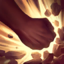

Tirador
/
Asesino
Dificultad Alta
HABILIDADES


PASIVA • PELEA SUCIO
Cada tres impactos de ataques o habilidades, inflige daño físico adicional. Contra campeones, también obtiene un escudo de daño por un breve momento.
1 • VENGANZARANG
Como un típico hechizo de búmeran, puede impactar a los enemigos dos veces (una vez de ida y otra de vuelta). El búmeran alcanzará a algunas unidades más allá del último objetivo al que impactó. Si impacta a un objetivo diferente durante este movimiento, su alcance se extenderá (teóricamente el alcance es infinito).
2 • CONTRA LAS REGLAS
Pasiva: Los enemigos que maten a los aliados de Akshan se convierten en Rufianes por algunos segundos. Matar a un rufián le otorga a Akshan oro adicional y reduce el temporizador de muerte del aliado caído. Activa: Obtiene camuflaje por algunos segundos. La duración se restaura cuando Akshan está cerca de un muro o entre la maleza. Obtiene velocidad de movimiento al dirigirse hacia los Rufianes.
3 • PIRUETA HEROICA
Akshan dispara un gancho que se fija a un muro durante algunos segundos para permitirle hacer una pirueta en círculo. Al hacer la pirueta, Akshan dispara al enemigo al que haya dañado más recientemente.
DEFINITIVA • TU MERECIDO
Apunta a un campeón enemigo y comienza a cargar disparos de Niebla durante algunos segundos.
CONFIGURACIÓN
OBJETOS
-

Espada del Rey Arruinado
3100+20 Daño de Ataque
+35% Velocidad de Ataque
SED: +10% de Vampirísmo Físico.
ATAQUES ARRUINADOS: Los ataques infligen daño físico adicional al impacto igual al 6% de la Vida actual del enemigo. (Los ataques cuerpo a cuerpo infligen 9%). Daño mínimo: 15. Máx. daño contra monstruos: 60.
DRENAR: Alcanzar a un campeón con 3 ataques o habilidades inflige de 30 a 100 de daño mágico y roba 25% de su Velocidad de Movimiento durante 2 seg. (60 seg de Enfriamiento). -

Espada de Carga Solari
3100+25% Tasa de Críticos
+30% Velocidad de Ataque
+15 Aceleración de Habilidad
RAYO SOLAR: Usar una habilidad acumula Resplandor (máx. 3 cargas) hasta por 10 seg. Al tener cargas acumuladas, obtiene un 25% de Tasa de Críticos. Los ataques que realizan golpes críticos usan una carga para infligir de 24 a 52 de daño mágico adicional al impacto, que aumenta hasta un 150% contra objetivos con poca vida.
Cada habilidad única solo puede generar una carga una vez cada 2 seg. -
Al Filo de la Cordura
2700+45% Velocidad de Ataque
+50 Resistencia Mágica
AL FILO DE LA CORDURA: Los ataques básicos infligen 15 - 80 de daño mágico adicional. Al estar por debajo del 50% de Vida, cura un (100% del cuerpo a cuerpo / 33% a distancia) del daño de este efecto, después de las mitigaciones.
-

Rencor de Serylda
3000+40 Daño de Ataque
+15 Aceleración de Habilidad
ÚLTIMO SUSPIRO: +30% de Penetración de Armadura.
GÉLIDO: Las habilidades activas que infligan daño y los ataques potenciados ralentizan a los enemigos un 30% durante 1 seg. -

La Sanguinaria
3300+50 Daño de Ataque
+25 Tasa de Críticos
SANGRIENTO: +15% de Vampirísmo Físico.
JURASANGRE: El Vampirísmo Físico te sobrecura y genera un escudo que absorbe de 40 a 320 de daño. Este escudo decae fuera de combate a lo largo de 10 seg. -

Grebas Glotonas
1000CALZADO: +40 de Velocidad de Movimiento.
SEGUNDOS: +8% de Vampirísmo Físico.
TERCEROS: +8% de Vampirísmo Mágico.
CARRERA (ACTIVA): Aumenta la Velocidad de Movimiento un 15% durante 3 seg. Infligir o recibir daño de campeones desactiva los efectos de Carrera. (60 seg de enfriamiento). -

Encantamiento de Protocinturón
500PROTOCINTURÓN (ACTIVA): Te desplazas hacia adelante y liberas misiles en un cono que infligen 75-145 de daño mágico. Si más de un misil alcanza campeones o monstruos, los misiles adicionales solo infligen un 10% de daño. (60 seg de enfriamiento).
RUNAS Y HECHIZOS
-

Conquistador
Obtienes acumulaciones de fuerza adaptable al atacar a un campeón con habilidades o ataques separados. Se acumula hasta 5 veces. Al alcanzar el máximo de acumulaciones, inflige daño adaptable adicional a campeones.
POR ACUMULACIÓN: 2 - 6 de Daño de Ataque adicional o 3 - 9 de Poder de Habilidad durante 6 seg.
EFECTO ADICIONAL CON EL MÁXIMO DE ACUMULACIONES: Cuerpo a cuerpo: 10% | A distancia: 7% de daño adaptable adicional a campeones. -

Brutalidad
Obtienes 7 de Daño de Ataque y un 2% de Penetración de Armadura o 14 de Poder de Habilidad y un 2% de Penetración de Magia (adaptable).
-

Cazador: Titán
Obtienes 20 de Vida Máxima. Los derribos de campeones únicos otorgan 20 de Vida Máxima Y 4% de Tenacidad.
-

Dulces Frutos
Aumenta la curación de Frutamiel en un 25%. Cada vez que tú o un aliado cercano coma una Frutamiel, obtienes 20 de oro.
-

Barrera
ENFRIAMIENTO: 120 seg.
Obtienes un escudo que absorbe 115 de daño (115-465 basado en nivel) durante 2 seg. -

Destello
ENFRIAMIENTO: 150 seg.
Te teletransportas una distancia corta hacia delante o hacia la dirección objetivo.
CÓMO JUGAR AKSHAN
Akshan es un tirador que se enfoca en construir elementos AD para infligir grandes cantidades de daño. Es muy móvil y agresivo, especialmente en la fase de calles y puede hacerlo bien contra muchos enfrentamientos. Cuando encuentres una oportunidad, siempre debes buscar atacar para activar tu lucha pasiva y sucia . Cuando llegues a la mitad y al final del juego, puedes usar la gran movilidad y el daño de Akshan para girar por el mapa y aumentar las probabilidades de victoria de tu equipo.
Akshan también se puede jugar en el carril de dúo. La construcción con el carril del dúo de Akshan gira más en torno a la construcción de posibilidades de golpe crítico y mucho daño de ataque, ya que serás la principal fuente de daño de tu equipo.